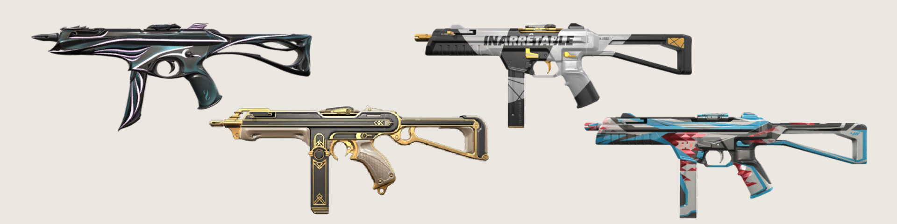
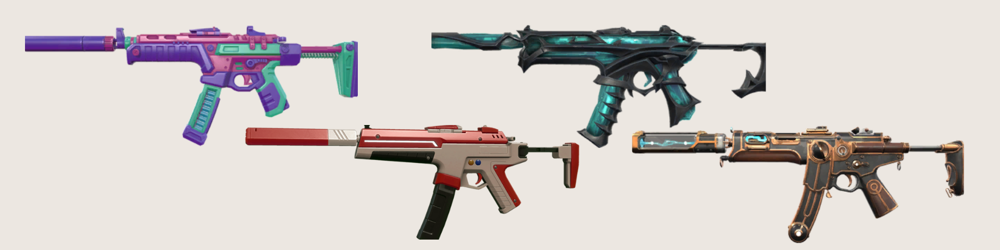

As sub-metralhadoras, também conhecidas como SMG's, são armas intermediárias. Seu poder de fogo não é tão alto quanto um rifle, porém não é tão baixo quanto uma pistola. Costumam ser usadas em situações de meia-compra
. Stinger: É uma metralhadora útil, mas não a melhor de sua classe. Seu dano é legalzinho e pode funcionar em rounds meia-compra, mas não se apegue a ela. Possui dois tipos de disparo: automático e com scope de 1.15x. Submetralhadora indicada para curtas e longas distâncias. Cartucho composto por 20 balas que causam dano considerável. No entanto, é uma arma um tanto quanto pesada e com bastante recuo.
. Spectre: É bastante semelhante à MP5 do CS:GO, é a melhor SMG do Valorant. Custa mais caro, é verdade, mas vale a pena desembolsar um pouco mais de créditos para comprá-la. Muito recomendável para rushs, pois ela não perde tanta precisão quando o operador está em movimento. Além disso, possui a mesma penetração de um rifle. Submetralhadora com silenciador. É bem equilibrada em dano, cadência e precisão, mas é preciso braço forte para controlar o recoil das rajadas.
